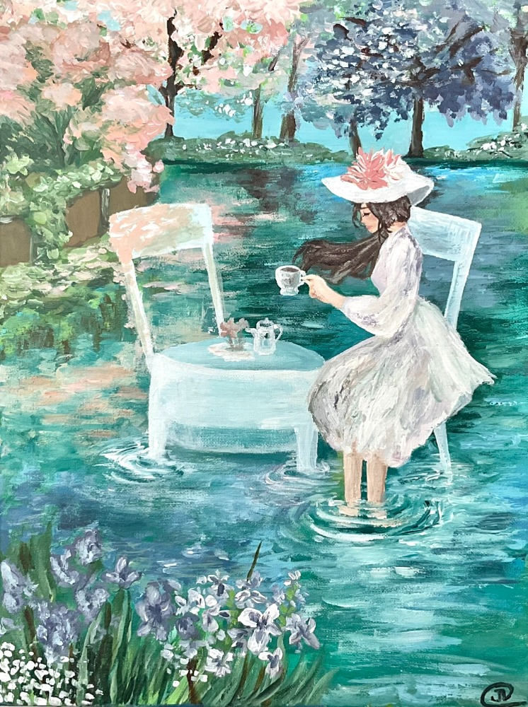
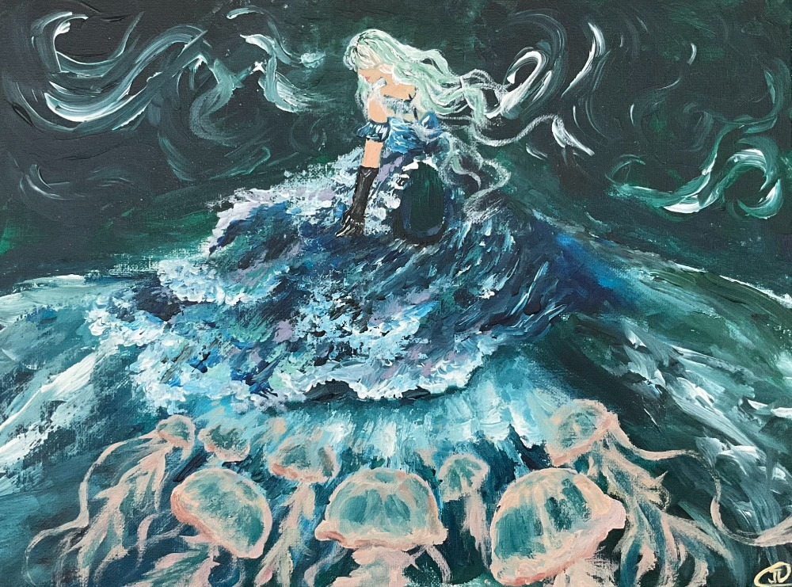
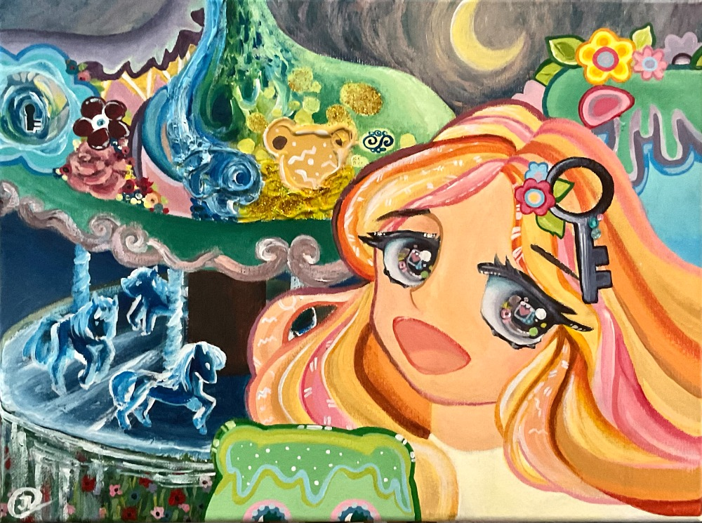
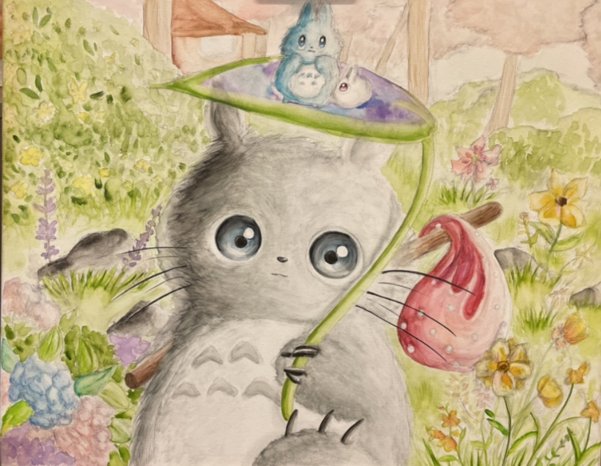
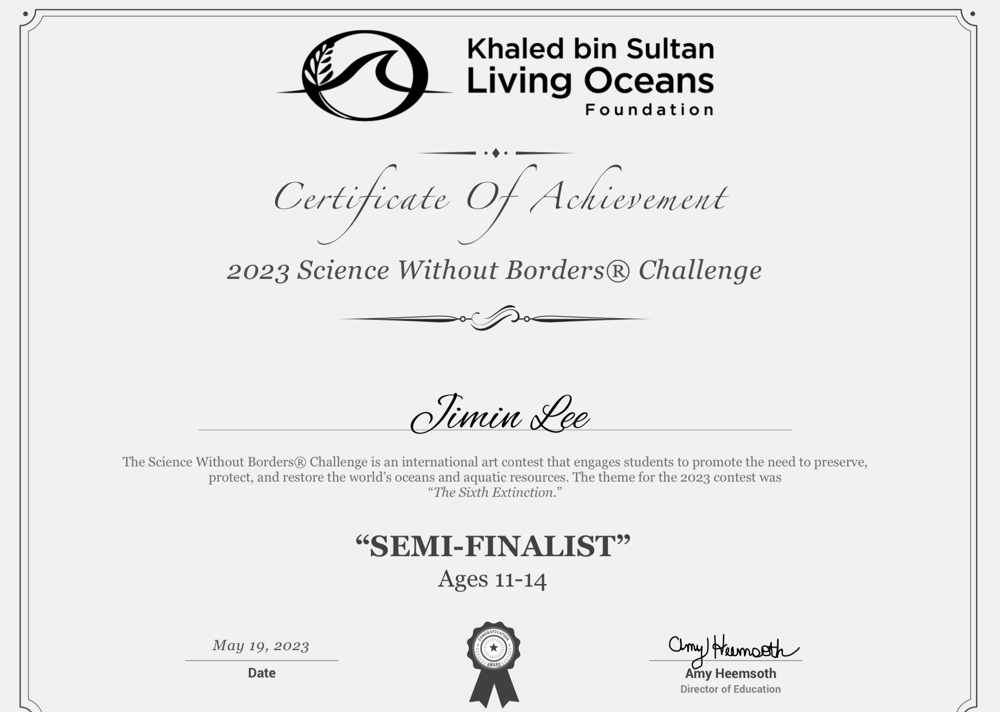
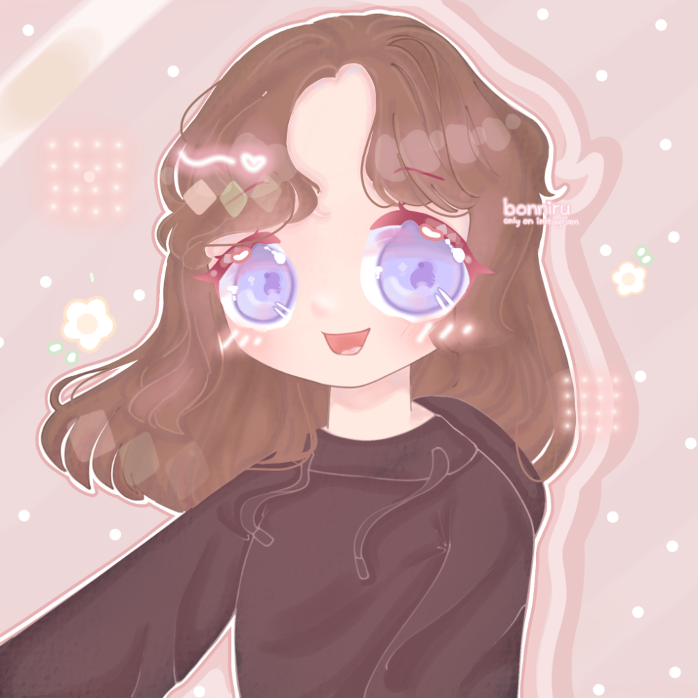
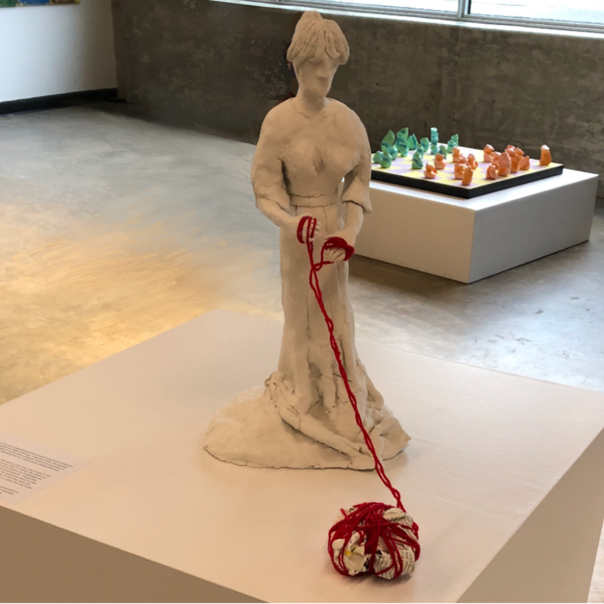
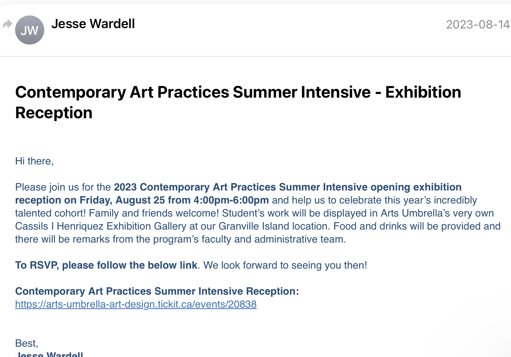

Luncheon of Reminisence and Eternity in Repressed Catharsis


Both of these artworks were for the Youth Exhibition by the Langley Arts Council.
Luncheon of Reminiscence and Eternity in Repressed Catharsis Explanation
I gained valuable experience displaying my artworks at the Aldergrove Kinsmen Centre as I became more familiar with the organization of exhibitions. Furthermore, it was an immense joy to have my art displayed for people to see. It was truly remarkable how both of these works got accepted by a juried exhibition. Instead of stopping with my previous success with “Totoro’s Morning Stroll,” I continued to embark on my artistic journey. I learned the valuable lesson of determination, and I will transfer that quality as a future application architect.
Carousel of Dreams

This artwork was for the "Artworks Inspired by Words" exhibition by the Langley Arts Council
Carousel of Dreams Explanation
Recognition by Sara Lee -beside- animated version -beside- acceptance form
I painted this piece for over a month. It was an artwork that paid homage to (and was a fan artwork of) South Korean visual artist Sara Lee (insert Sara Lee’s website in Sara Lee). When I emailed the piece to her, she thanked me with a reply and posted the animated version on her Instagram story. It was also a special piece because I had it accepted in “Artworks Inspired by Words,” a juried exhibition by the Langley Arts Council. By pursuing this opportunity, I gained the valuable experience of showing appreciation to visual artists while taking creative risks.
Like application architecture, the animated version of this artwork required the ability to utilize computer programs. While creating this, I learned how to apply sound effects and graphic choices to make my painting “come alive.”
Totoro's Morning Stroll

This artwork was for the "Bring on Spring" exhibition by the Langley Arts Council
Totoro's Morning Stroll Explanation
This was the first artwork I entered in a juried exhibition (the Bring on Spring Exhibition by the Langley Arts Council). It taught me the importance of bold risk-taking and the art of overcoming the “comfort zone.” These skills are intrinsic in application architecture, where constant learning and inventing are required.
Um and Yang of the Universe
This artwork placed semi-finalist in a worldwide art contest
Um and Yang of the Universe Explanation
This painting was in the semi-finalist place of a worldwide art contest hosted by the Khaled bin Sultan Living Oceans Foundation. It made me feel accomplished, and I was so happy to have achieved that milestone in visual arts. This opportunity provided valuable lessons in discipline and following through to the end, which I could apply to application development.

Morning Daisies-Commissioned Work

This artwork was made for a commissioner.
Morning Daisies Explanation
Morning Daisies was the second work I was commissioned to make. I received payment in the form of game currency, and it involved drawing the character of the client. This artwork was digitally made with my index finger on an iPad. This work demonstrates my ability to use digital applications to make graphic designs and my competence. Moreover, it provided valuable experience in providing paid services because I wish to work as a freelance application architect.
Reveries in Wondland
This artwork scored second place in an art contest.
Reveries in Wonderland Explanation
Reveries in Wonderland is an artwork that won second place in an art contest, where the competitors were supposed to draw two Roblox avatar characters. This was the first time I entered an art contest, and it raised my confidence. Like the artwork above, this was made digitally with my index finger on an iPad.
Nurture

This artwork was made in a scholarship-funded program hosted by Arts Umbrella, and it entered "Assimilation," a student-led exhibition.
Nurture Explanation

“Nurture” is an art piece that I created in the scholarship-funded program at Arts Umbrella. It was placed at the center of the exhibition. Through this experience, I learned the value of time-management and speed. All of which is important to application architecture (especially because software engineering jobs have deadlines to follow).
 I gained valuable experience displaying my artworks at the Aldergrove Kinsmen Centre as I became more familiar with the organization of exhibitions. Furthermore, it was an immense joy to have my art displayed for people to see. It was truly remarkable how both of these works got accepted by a juried exhibition. Instead of stopping with my previous success with “Totoro’s Morning Stroll,” I continued to embark on my artistic journey. I learned the valuable lesson of determination, and I will transfer that quality as a future application architect.
I gained valuable experience displaying my artworks at the Aldergrove Kinsmen Centre as I became more familiar with the organization of exhibitions. Furthermore, it was an immense joy to have my art displayed for people to see. It was truly remarkable how both of these works got accepted by a juried exhibition. Instead of stopping with my previous success with “Totoro’s Morning Stroll,” I continued to embark on my artistic journey. I learned the valuable lesson of determination, and I will transfer that quality as a future application architect.
 This was the first artwork I entered in a juried exhibition (the Bring on Spring Exhibition by the Langley Arts Council). It taught me the importance of bold risk-taking and the art of overcoming the “comfort zone.” These skills are intrinsic in application architecture, where constant learning and inventing are required.
This was the first artwork I entered in a juried exhibition (the Bring on Spring Exhibition by the Langley Arts Council). It taught me the importance of bold risk-taking and the art of overcoming the “comfort zone.” These skills are intrinsic in application architecture, where constant learning and inventing are required.